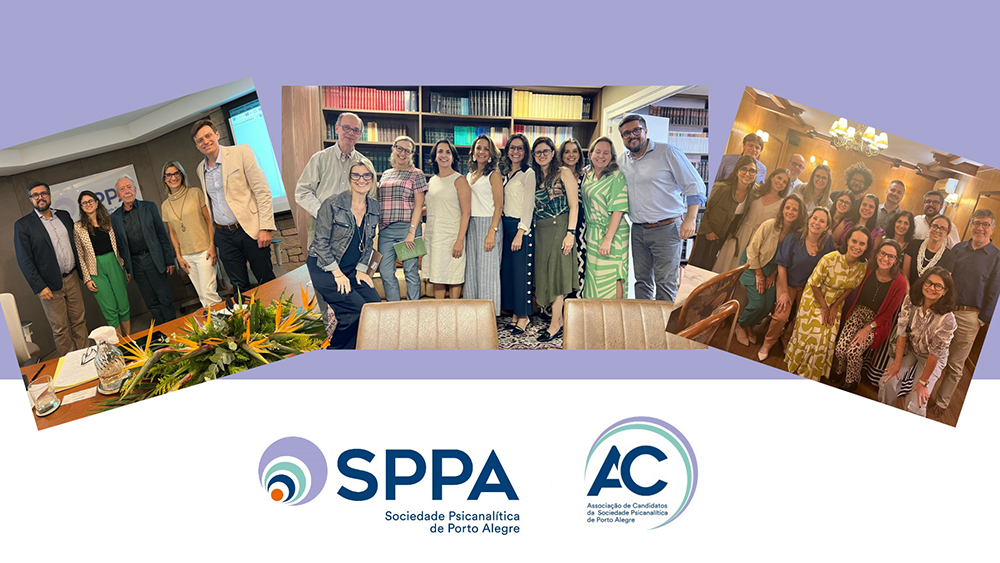

Da recepção aos novos membros à resposta para a catástrofe no RS
- 
 Após tragédia climática, AC retoma a programação normal, mas continuará a enfrentar os próximos desafios com determinação e solidariedade
Após tragédia climática, AC retoma a programação normal, mas continuará a enfrentar os próximos desafios com determinação e solidariedade
O primeiro semestre de 2024 foi marcado por uma série de eventos significativos organizados pela Associação de Candidatos (AC) do Instituto da Sociedade Psicanalítica de Porto Alegre (SPPA). Este período começou em 29 de janeiro, com a recepção aos novos membros aspirantes da formação em psicanálise. Foi um momento especial, não apenas para integrar e apoiar os novos colegas que iniciaram sua jornada nos estudos psicanalíticos, mas também para compartilhar experiências sobre os quatro primeiros anos de seminários e introduzi-los ao 4º eixo, um componente essencial da formação.
Durante a recepção, foi explicado aos novos membros que a AC é apoiada por diversas entidades regionais, nacionais e internacionais, como a Associação Brasileira de Candidatos (ABC), a Organização de Candidatos da América Latina (OCAL) e a International Psychoanalytical Studies Organization (IPSO). Esse suporte é fundamental para o desenvolvimento e integração dos aspirantes na comunidade psicanalítica global.
Em 8 de março, a AC teve a honra de receber o professor Jacques André, um renomado pensador da psicanálise contemporânea. Naquela semana, Jacques André ministrou palestras sobre "O Mito do Masculino" e "O Desamparo na Civilização" na SPPA. A AC aproveitou a oportunidade para convidá-lo a realizar uma supervisão coletiva com seus membros. O colega Gustavo Bortoluzzi apresentou um material que gerou uma discussão rica e proveitosa. Esse encontro foi marcante para todos os candidatos presentes, que certamente guardarão em suas memórias tal supervisão.
Outro ponto alto do semestre foi o XVII Simpósio Interno Integrado AC-IP/SPPA, realizado no dia 27 de abril. O evento contou com uma programação intensa e diversificada, com 12 apresentações que exploraram uma variedade de temas psicanalíticos contemporâneos, indo desde um retorno aos temas clássicos da psicanálise, passando pela psicanálise social e comunitária, até os desafios da contemporaneidade, especialmente o racismo.
Em maio, logo após as primeiras notícias da tragédia climática no Rio Grande do Sul, que afetou centenas de cidades e deixou milhares de pessoas desabrigadas, a AC priorizou um trabalho incansável junto às linhas de frente, oferecendo suporte material e psíquico aos acometidos pela catástrofe. Inicialmente, vários membros organizaram doações de medicamentos, roupas e itens de higiene, além de participar do acolhimento dos desalojados em abrigos e instituições. Como psicanalistas em formação, também ofereceram apoio para ajudar a aliviar o sofrimento mental.
O suporte do Instituto e da SPPA, além do oferecido por organizações como a ABC e o SOS Brasil, está sendo essencial nesse momento tão difícil pelo qual passa o Rio Grande do Sul, formando uma rede de apoio eficaz, reforçada pelas mensagens de solidariedade internacional recebidas da OCAL e da IPSO. Essa cooperação global trouxe esperança em meio ao caos.
A jornada de cuidado e reconstrução está apenas começando. O compromisso da AC vai além das respostas emergenciais: há uma dedicação em apoiar tanto a sobrevivência física quanto mental dos afetados. Cada ato de generosidade ou gesto de solidariedade reafirma o compromisso de não só reerguer cidades, mas também de fortalecer os valores humanos.
Aos poucos, a Associação de Candidatos está retornando à sua programação normal. Em paralelo, continuará a enfrentar os desafios à frente com determinação e solidariedade.